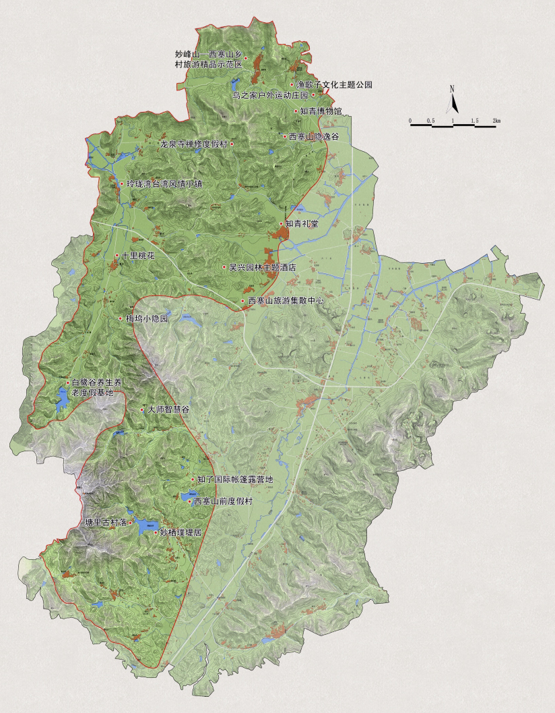

[ 点击景点名称可查看详情介绍 ]

妙西镇历史悠久，本名妙喜，以寺观得名。梁武帝大同7年建妙喜寺于湖州西南部的金斗山，“帝以东方有妙喜佛国因而名之”。唐贞观六年（公元632年）移妙喜寺于杼山，即今妙西的宝积寺，而妙喜之名未易。因“喜”与“西”方言音相似，故有妙西之名。
妙西镇位于湖州市西南约12公里处，属西部半山区乡镇，隶属于湖州市吴兴区，镇域东邻道场乡，南接埭溪镇，西连长兴县和平镇，北接康山街道，是林业重点乡镇。全镇总人口1.6万人，辖15个行政村，176个村民小组，85个自然村，2个自然镇。
妙西镇属低山丘陵地区，生态环境良好，辖区内山清水秀，佳木成荫，野芳幽香，空气清新，拥有70%的森林覆盖率，是一座天然的人居家园。全镇拥有耕地总面积23005.54亩，山林面积约102419亩。妙西是属于江南古山镇，历史悠久，物产丰富，民风淳朴，有不少保存完好的古建筑和农家特产，如霞幕山水蜜桃声名远播，石卵古桥为一奇，三癸雨芽为一绝，四季竹笋为一鲜。
妙西距今已有1500多年，历代名人辈出，茶圣陆羽隐于此写下《茶经》，遗址犹在；14世纪朝鲜国师曾来此学道弘法，终成正果；近代法学第一人沈家本心系妙西，长眠于此……。妙西古也称“东方佛国”，有元明观、栖贤寺等古寺院，其中栖贤寺为湖州“四大丛林禅寺”之一，始建于唐宋时期，地处幽静，青山环抱，绿水相映，与附近茶文化景区相得益彰，形成“禅茶合一”的格局，历年香火兴旺不衰。
游览电话:0572-2532004/3120655/3121622 | 传真:0572-3120671 | 投诉电话:0572-2530838
Copyright 2016 All Rights Reserved.湖州妙西旅游开发有限公司 版权所有
网站IPC：浙ICP备16027868号
吴兴西塞山旅游度假区办公室 主办
技术支持：湖州二十一城信息科技有限公司
Copyright 2016 All Rights Reserved.湖州妙西旅游开发有限公司 版权所有
网站IPC：浙ICP备16027868号
吴兴西塞山旅游度假区办公室 主办
技术支持：湖州二十一城信息科技有限公司